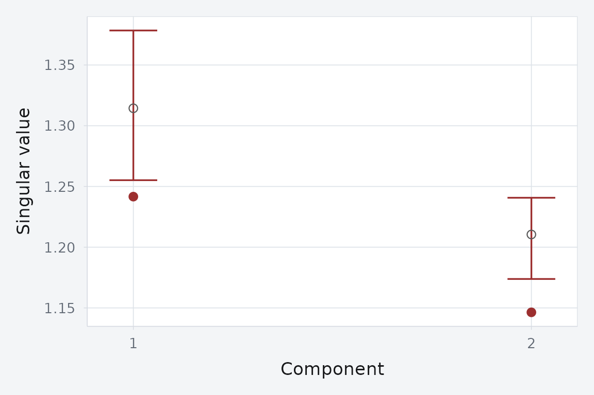

Why evaluate a multiblock model?
Exploratory score plots are useful, but they are not the whole story.
In muscal, the main evaluation questions are usually:
- Are the leading components stable under resampling?
- Is the shared structure stronger than a row-shuffled null?
- How well does the fitted model reconstruct or predict held-out data?
This vignette shows the package-level tools for answering those questions. The same workflow applies across methods that expose a standard fit contract.
What does the evaluation API cover?
muscal exposes one generic resampling helper and one
generic CV helper:
metric_registry()
#> # A tibble: 15 × 4
#> task metric maximize description
#> <chr> <chr> <lgl> <chr>
#> 1 reconstruction mse FALSE Mean squared reconstruct…
#> 2 reconstruction rmse FALSE Root mean squared recons…
#> 3 reconstruction r2 TRUE Global reconstruction R-…
#> 4 reconstruction mae FALSE Mean absolute reconstruc…
#> 5 response_prediction mse FALSE Mean squared response pr…
#> 6 response_prediction rmse FALSE Root mean squared respon…
#> 7 response_prediction r2 TRUE Global response predicti…
#> 8 response_prediction mae FALSE Mean absolute response p…
#> 9 response_prediction mean_correlation TRUE Mean row-wise Pearson co…
#> 10 response_prediction mean_cosine_similarity TRUE Mean row-wise cosine sim…
#> 11 retrieval_alignment mean_top1_similarity TRUE Mean cosine similarity o…
#> 12 retrieval_alignment mean_topk_similarity TRUE Mean cosine similarity a…
#> 13 retrieval_alignment oracle_gap FALSE Average gap between the …
#> 14 retrieval_alignment recall_at_k TRUE Fraction of queries whos…
#> 15 retrieval_alignment mrr TRUE Mean reciprocal rank of …
default_metrics("reconstruction")
#> [1] "mse" "rmse" "r2"
default_metrics("response_prediction")
#> [1] "mse" "rmse" "r2"
#> [4] "mean_cosine_similarity"The registered task families are:
-
reconstructionfor same-row multiblock models such asmfa() -
response_predictionfor anchored models that predict a reference block -
retrieval_alignmentfor row-alignment style retrieval tasks
Bootstrap and permutation inference for MFA
We start with a standard same-row MFA problem.
sim <- synthetic_multiblock(
S = 3, n = 48,
p = c(12, 10, 8),
r = 2, sigma = 0.25, seed = 7
)
fit_mfa <- mfa(sim$data_list, ncomp = 2)
stopifnot(all(is.finite(scores(fit_mfa))))
stopifnot(length(fit_mfa$sdev) == 2)Bootstrap component stability
Bootstrap inference is useful when you want interval estimates for the leading component strengths.
boot_mfa <- infer_muscal(
fit_mfa,
method = "bootstrap",
statistic = "sdev",
nrep = 8,
seed = 101
)
boot_mfa$summary
#> # A tibble: 2 × 7
#> component label observed mean sd lower upper
#> <int> <chr> <dbl> <dbl> <dbl> <dbl> <dbl>
#> 1 1 comp1 1.24 1.31 0.0444 1.26 1.38
#> 2 2 comp2 1.15 1.21 0.0260 1.17 1.24
stopifnot(all(is.finite(boot_mfa$summary$mean)))
stopifnot(all(boot_mfa$summary$upper >= boot_mfa$summary$lower))
Bootstrap summary for MFA component strengths. Error bars show percentile intervals over resampled refits.
Permutation test for shared signal
Permutation inference asks whether the observed leading components are stronger than what you would expect after breaking row-wise alignment across blocks.
perm_mfa <- infer_muscal(
fit_mfa,
method = "permutation",
statistic = "sdev",
nrep = 19,
seed = 202
)
perm_mfa$component_results
#> # A tibble: 2 × 6
#> component label observed p_value lower_ci upper_ci
#> <int> <chr> <dbl> <dbl> <dbl> <dbl>
#> 1 1 comp1 1.24 0.55 1.19 1.30
#> 2 2 comp2 1.15 0.75 1.12 1.21Reconstruction cross-validation for MFA
For same-row methods, the usual held-out target is reconstruction error.
X_concat <- do.call(cbind, sim$data_list)
md <- multidesign::multidesign(X_concat, data.frame(batch = rep(c("A", "B"), each = 24)))
folds_mfa <- multidesign::cv_rows(
md,
rows = list(1:6, 25:30),
preserve_row_ids = TRUE
)
res_mfa_cv <- cv_muscal(
folds = folds_mfa,
fit_fn = function(analysis) {
Xa <- multidesign::xdata(analysis)
mfa(
list(
X1 = Xa[, 1:12, drop = FALSE],
X2 = Xa[, 13:22, drop = FALSE],
X3 = Xa[, 23:30, drop = FALSE]
),
ncomp = 2
)
},
estimate_fn = function(model, assessment) {
predict(model, multidesign::xdata(assessment), type = "reconstruction")
},
truth_fn = function(assessment) multidesign::xdata(assessment),
metrics = c("mse", "rmse", "r2")
)
res_mfa_cv$scores
#> # A tibble: 2 × 4
#> mse rmse r2 .fold
#> <dbl> <dbl> <dbl> <int>
#> 1 0.0591 0.243 -0.0134 1
#> 2 0.0633 0.252 -0.0695 2Response-prediction cross-validation for Anchored MFA
Anchored MFA has a different evaluation target: predicting rows of
the reference block Y from auxiliary blocks with incomplete
overlap.
fit_anchor <- anchored_mfa(
Y = Y,
X = list(X1 = X1, X2 = X2),
row_index = list(X1 = idx1, X2 = idx2),
ncomp = 2
)
stopifnot(all(is.finite(scores(fit_anchor))))
stopifnot(setequal(fit_anchor$oos_types, c("response", "scores", "reconstruction")))
d1 <- multidesign::multidesign(X1, data.frame(anchor = idx1, Y[idx1, , drop = FALSE]))
d2 <- multidesign::multidesign(X2, data.frame(anchor = idx2, Y[idx2, , drop = FALSE]))
hd <- multidesign::hyperdesign(list(X1 = d1, X2 = d2), block_names = c("X1", "X2"))
folds_anchor <- multidesign::cv_rows(
hd,
rows = list(
list(X1 = 1:3, X2 = 1:3),
list(X1 = 4:6, X2 = 4:6)
),
preserve_row_ids = TRUE
)
res_anchor_cv <- cv_muscal(
folds = folds_anchor,
fit_fn = function(analysis) {
X_blocks <- multidesign::xdata(analysis)
idx_blocks <- lapply(multidesign::design(analysis), function(des) des$anchor)
anchored_mfa(Y = Y, X = X_blocks, row_index = idx_blocks, ncomp = 2)
},
estimate_fn = function(model, assessment) {
X_blocks <- multidesign::xdata(assessment)
do.call(rbind, lapply(names(X_blocks), function(block_name) {
predict(model, X_blocks[[block_name]], block = block_name, type = "response")
}))
},
truth_fn = function(assessment) {
des_blocks <- multidesign::design(assessment)
do.call(rbind, lapply(des_blocks, function(des) {
as.matrix(des[, colnames(Y), drop = FALSE])
}))
},
task = "response_prediction",
metrics = c("mse", "mean_cosine_similarity")
)
res_anchor_cv$scores
#> # A tibble: 2 × 3
#> mse mean_cosine_similarity .fold
#> <dbl> <dbl> <int>
#> 1 0.0445 0.122 1
#> 2 0.0501 0.0554 2Inference for graph-anchored models
graph_anchored_mfa() uses the same anchored prediction
target, but adds a graph penalty over auxiliary features. The evaluation
workflow stays the same: you can still use infer_muscal()
for resampling summaries and cv_muscal() for held-out
prediction.
colnames(X1) <- c(paste0("f", 1:4), paste0("u1_", 1:10))
colnames(X2) <- c(paste0("f", 1:4), paste0("u2_", 1:7))
fit_graph <- graph_anchored_mfa(
Y = Y,
X = list(X1 = X1, X2 = X2),
row_index = list(X1 = idx1, X2 = idx2),
ncomp = 2,
feature_graph = "colnames",
graph_lambda = 2
)
stopifnot(fit_graph$fit_spec$refit_supported)
stopifnot(all(is.finite(scores(fit_graph))))
boot_graph <- infer_muscal(
fit_graph,
method = "bootstrap",
statistic = "sdev",
nrep = 6,
seed = 303
)
boot_graph$summary
#> # A tibble: 2 × 7
#> component label observed mean sd lower upper
#> <int> <chr> <dbl> <dbl> <dbl> <dbl> <dbl>
#> 1 1 comp1 0.169 0.169 0.000644 0.167 0.169
#> 2 2 comp2 0.169 0.168 0.00134 0.166 0.169Choosing the right validation path
- Use
infer_muscal()when the fitted method stores refit metadata and you want bootstrap intervals or permutation p-values. - Use
cv_muscal()when you care about held-out reconstruction or prediction error. - Use method-specific tuning helpers such as
ipca_tune_alpha()when the model has a dedicated hyperparameter-selection routine.
Not every method currently exposes generic refit metadata. When that
is not yet available, you can still use cv_muscal() by
providing explicit fit_fn, estimate_fn, and
truth_fn callbacks. At present, mfa(),
mcca(), ipca(), anchored_mfa(),
aligned_mfa(), and graph_anchored_mfa() all
support generic infer_muscal() workflows directly.
Next steps
-
vignette("mfa")for the core same-row MFA workflow -
vignette("mcca")for correlation-driven same-row integration -
vignette("ipca")for adaptive integration with both tuning and generic evaluation -
vignette("linked_mfa")for anchored prediction with incomplete overlap -
?graph_anchored_mfafor graph-regularized anchored integration